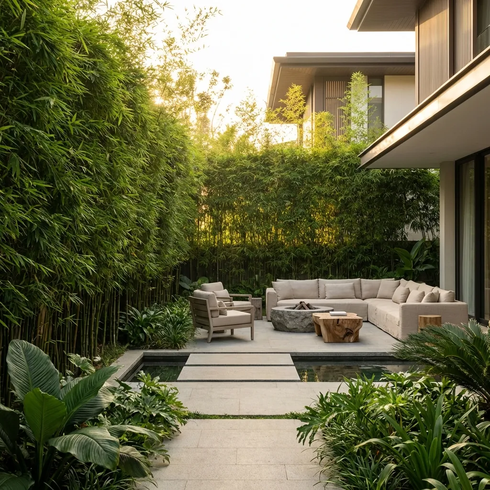
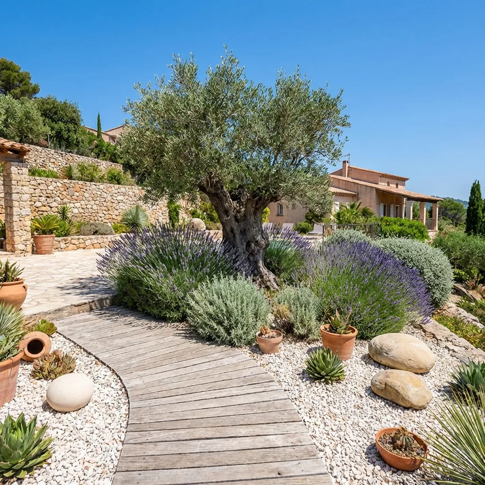
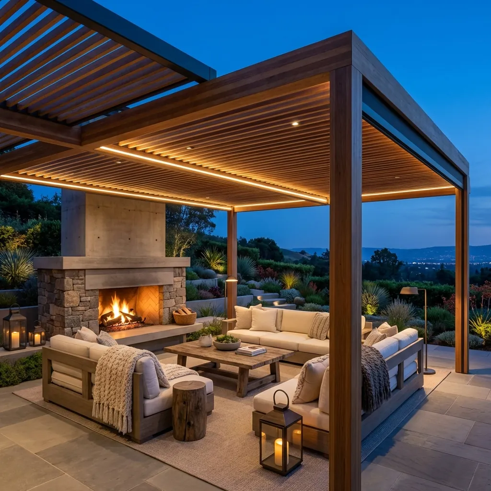

Peyzaj mimarisinde yeni bir dönem başlıyor. Gösterişten uzak ama son derece kaliteli, "Sessiz Lüks" (Quiet Luxury) kavramı artık bahçelerimize de taşınıyor.
Özellikle Alaçatı, Urla ve Çeşme gibi Ege'nin incisi bölgelerde, villa sahipleri artık daha mahremiyet odaklı, bakımı kolay ama estetik değeri yüksek tasarımları tercih ediyor. İşte 2026 yılının öne çıkan 3 ana trendi:
1. Biyofilik Tasarım ve Mahremiyet
Komşularla iç içe olan villa projelerinde, yeşil duvarlar ve sık dokulu çalı grupları (örneğin Bambu veya Leylandi) ile doğal bariyerler oluşturmak hiç olmadığı kadar popüler. Yapay çitler yerine, rüzgarla hışırdayan doğal bitki perdeleri tercih ediliyor. Bu sadece görsel bir engel değil, aynı zamanda ses izolasyonu da sağlıyor. Doğayla bütünleşen bu "yaşayan duvarlar", betonarme yapıların sertliğini yumuşatıyor.

2. Kurakçıl Peyzaj (Xeriscape)
Su kaynaklarının korunması bilinciyle, az su isteyen bitkiler ön planda. Zeytin ağaçları, lavantalar, biberiyeler ve çeşitli sukulent türleri, Ege'nin ruhuna en uygun seçimler. Çim alanlar azaltılarak, yerine dekoratif dere çakılları, cüruflar ve ahşap deck uygulamaları artıyor. Bu yaklaşım, bahçe bakım maliyetlerini %60'a varan oranda düşürürken, estetikten ödün vermeyen sofistike bir görünüm sunuyor.

3. Dış Mekan Yaşam Odaları
Bahçe artık sadece izlenen bir manzara değil, evin bir odası. Pergola altı oturma grupları, dış mekan şömineleri ve donanımlı barbekü alanları ile yaşam dışarı taşıyor. Aydınlatma ise artık sadece güvenlik için değil, atmosfer yaratmak için kullanılıyor. Zeminde kullanılan halılar, hava koşullarına dayanıklı kumaşlar ve dekoratif objelerle iç mekan konforu açık havaya taşınıyor.

4. Akıllı Bahçe Sistemleri
Teknoloji doğayla buluşuyor. Toprak nem sensörüne bağlı otomatik sulama sistemleri, güneşin hareketine göre açılıp kapanan bioklimatik pergolalar ve telefondan kontrol edilebilen aydınlatma senaryoları... 2026'da lüks, sadece görsel değil aynı zamanda "zahmetsiz" olmak zorunda.
Tüm Yazılara Dön